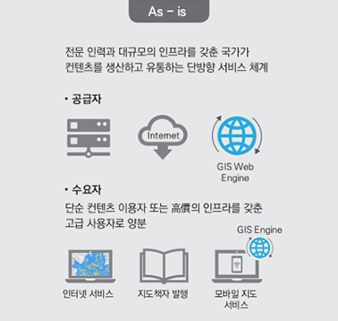
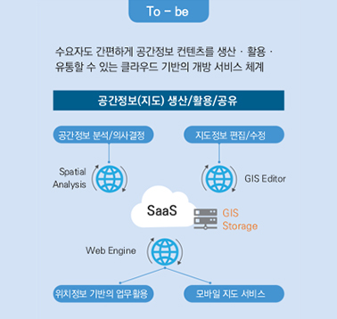
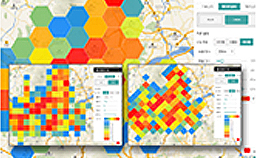
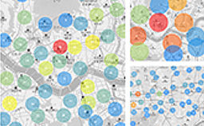
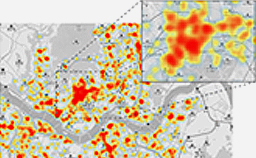
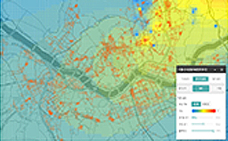
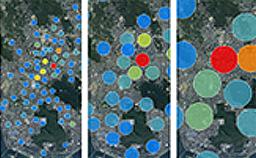
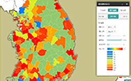

맵프라임
MapPrime
MapPrime은 국제 표준을 준용하는 WebGIS서버로서,
클라이언트 및 지원도구를 제공하는 Enterprise GIS 솔루션입니다.
-
MapPrime Cloud
- 데이터를 조회 및 시각화하고, 분석,
- 공유할 수 있는클라우드형 GIS 저작도구 제공
- 서비스 게시 및 배포관리 기능 제공
- 생성한 분석결과 등 콘텐츠의 웹, 모바일 등을
- 통한 시각화 서비스 제공
PC 또는 모바일 장치에 별도의 소프트웨어(앱) 설치 업이 인터넷 환경에서 언제 어디서나 공간정보(Geo Data)를
생산·공유할 수 있는 실시간 클라우드 서비스입니다. As - is 수요자도 간편하게 공간정보 컨텐츠를 생산,활용,유통할 수 있는 클라우드 기반의 개방 서비스 체계
 To - be 전문 인력과 대규모의 인프라를 갖춘 국가가 컨텐츠를 생산하고 유통하는 단방향 서비스 체계
방대한 공공데이터를 손쉽게 사용 공신력 있는 공공기관에서 제공하고 있는 방대한 공간정보(Geo Data)를 체계화된 분류 체계와 간편한 검색을 이용하여
손쉽게 활용할 수 있습니다.
전문 GIS 분석 기능 및 시각화 제공 GeoBI(Geospatial Business Intelligence)는 고가의 GIS 전문 소프트웨어에서나 가능했던 공간분석(Spatial Analysis)기능과
시각화(Visualization)기능을 제공합니다.
 그리드 분석  클러스터링 분석  밀도 분석  공간 자기 상관관계 분석  시계열 분석  데이터 분류 -
MapPrime 2D
- WMS, WFS, WPS등 OGC 표준지원
- 모니터링 및 웹기반 관리 기능 제공
- 다양한 Web Server 및 UNIX, Windows, LINUX 등
- O/S지원
토지, 건물 등 공간정보를 부동산, 도시계획, 산림 등 공공의 행정정보와 융합하여 효율적 업무 처리 및 합리적인
의사결정지원을 지원하는 시스템을 구축합니다. -
MapPrime 3D
- BIM & GIS 기본 기능
- HTML5 WebGL 웹 표준 지원
- Window, Linux, MAC OS 등 다양한 운영체제 지원
- 센서정보와 BIM 정보 매시업 기능
- 대시보드 모니터링
- 시나리오 모니터링
- 빌딩 설비 모니터링
- Data History 관리 기능
- 공간관리/설비관리/유지관리
토지, 건물 등 공간정보를 부동산, 도시계획, 산림 등 공공의 행정정보와 융합하여 효율적 업무 처리 및 합리적인
의사결정지원을 지원하는 시스템을 구축합니다.